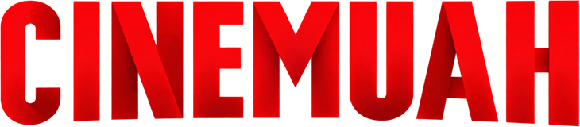

A movie and series player built around a cassette shelf. Browse thousands of films as VHS spines, pull one out, and press play. It plays your own library too.
Everything is tuned to feel instant: shelves load as you reach them, scrolling runs on the GPU, and search answers before you finish typing.
30 endless shelves across every genre, plus popular series. The film you pick slides out with its sleeves fanned behind it.
Each film's own colours are sampled from its poster and diffused behind the shelf as you browse.
A big search bar on every page, recent searches and suggestions, and ⌘K from anywhere.
60 languages, including Hindi, Bengali, Tamil, Telugu, Malayalam, Kannada and Marathi. One picker filters every page.
Files the player can't decode are converted on the fly with FFmpeg, using the Mac's hardware encoder.
Dark, light or match your Mac, eight accent colours, and native window controls.
CineLocal isn't signed with a paid Apple or Microsoft certificate yet, so each system asks for one extra confirmation the first time.